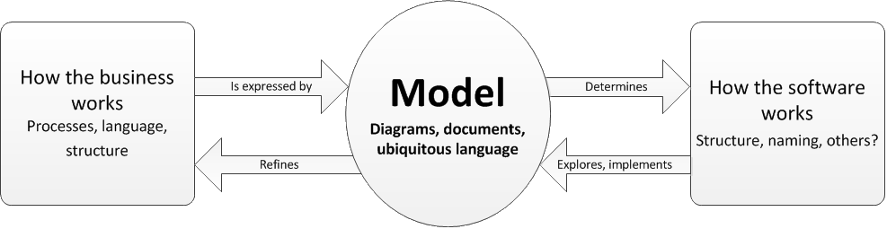

Domain Driven Design
or...
Lessons from the SkillsMatter DDD eXchange NYC 2013
or...
WTF is DDD anyway?
by Dave Nichol and friends
Domain Driven Design
- For most software projects, the primary focus should be on the domain and domain logic
- Complex domain designs should be based on a model
- Explore models in creative collaboration between business stakeholders and implementers
- Speak a ubiquitous language within an explicitly bounded context
So, this model...
- Is a system of abstractions
- Is a combination of diagrams and text
- Can be in whatever format(s) make sense
- Should make sense to both developers and stakeholders!
- Will change over time
The Domain Model is central to the relationship between the software and the rest of the organization
More important
than the model as an artifact is
modeling as a continual process
of building and refining the model over time to add detail and
“make implicit concepts explicit.”

Note that modeling is NOT a development exercise—rather, it is a collaborative process that developers do with
stakeholders.
Wat?

Just read the book:
Domain-Driven Design: Tackling Complexity in the Heart of Software by Eric EvansBut srsly...
DDD also defines some sweet patterns and techniques
- Layered architecture
- Repository
- Aggregates
- Ubiquitous language
- Bounded context
- ...and many more!
Takeaways
Don't build it
Look for prior art, existing research and off-the-shelf solutions where possible
Beware frameworks
They bias design to be structured a certain way that has nothing to do with your domain
Don't rebuild
Legacy replacement projects are almost always a bad idea
(whoops)
Our modeling process needs work
- No single diagram is “the model”
- The model needs to be viscerally comprehensible to stakeholders (not just BAs)
- Modeling is not a one-time step
- Sure, it's hard
Our code doesn't express our model clearly enough
This code mixes domain/application layers:
(hint: look for domain logic)
[NoCache]
[HttpPost]
public JsonNetResult UploadPdf(int caseEntityId, string name, int maxSize)
{
var uploadedFile = Request.Files[0];
try
{
if (!CaseFileManagerHelperMethods.IsFileAPdf(uploadedFile.InputStream))
{
_log.Error(string.Format("Uploaded file {0} is not a valid pdf.", name));
CaseFileEntity caseFileEntity = new CaseFileEntity {Error = "This file is not a valid Pdf."};
return new JsonNetResult { Data = caseFileEntity };
}
if (uploadedFile.InputStream.Length > maxSize)
{
const int maxAllowableUploadSize = 15; // 15 MB
_log.Error(string.Format("Uploaded file {0} exceeds maximum size requirement of {1}", name, maxAllowableUploadSize));
string errorDescription = string.Format("The file you are trying to upload exceeds our size limit of {0}MB. Please contact your software company for instructions on how to reduce the size of your file.", maxAllowableUploadSize);
CaseFileEntity caseFileEntity = new CaseFileEntity { Error = errorDescription };
return new JsonNetResult { Data = caseFileEntity };
}
return new JsonNetResult { Data = SaveCaseFile(uploadedFile, caseEntityId) };
}
catch (Exception ex)
{
_log.Error(string.Format("Exception occurred in CaseFileManagerController.UploadPdf(): {0}", ex));
CaseFileEntity caseFileEntity = new CaseFileEntity {Error = "IO error."};
return new JsonNetResult { Data = caseFileEntity };
}
}
Put domain logic where it belongs:
(hint: elsewhere)
[NoCache]
[HttpPost]
public JsonNetResult UploadPdf(int caseEntityId, string name, int maxSize)
{
var uploadedFile = Request.Files[0];
try
{
var result = _caseFileManager.UploadPdf(uploadedFile, caseEntityId, maxSize);
}
catch (Exception ex)
{
_log.Error(string.Format("Exception occurred in CaseFileManagerController.UploadPdf(): {0}", ex));
throw new WebException();
}
return new JsonNetResult { Data = result };
}
Please see also
- Domain-Driven Design: Tackling Complexity in the Heart of Software
- DDD community site
- Eric Evans on Domain-Driven Design: Putting the Model to Work
- David Laribee in MSDN Magazine: An Introduction To Domain-Driven Design
- Talks from the conference
- Greg Young on Document-Based Messaging and Analysis
- Alberto Brandolini on Model Storming
- Eric Evans: Keynote on DDD retrospective and case study
- Robert Smallshire on How DDD became an essential ingredient for competitive software in the energy sector
- Vaughn Vernon on Reactive DDD with Scala and Akka
To be continued...